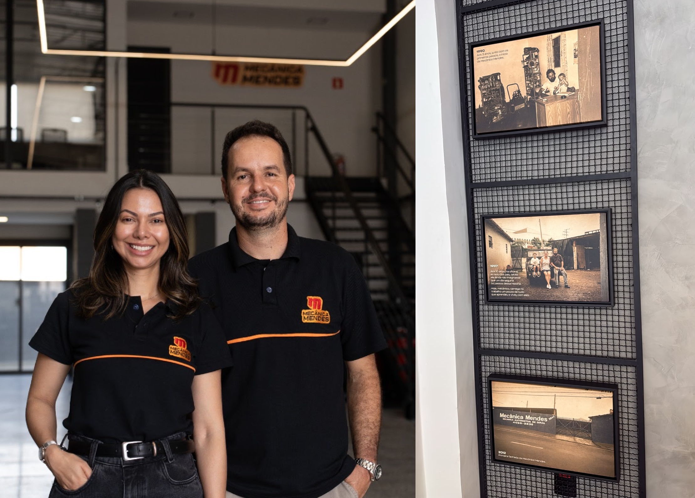

Experiência real
Conhecimento construído desde 1990 atendendo diferentes perfis de veículos.
Diagnóstico inteligente, manutenção transparente e experiência de quem há mais de três décadas coloca vidas em movimento.

Mais do que reparar carros, queremos que você entenda o que seu veículo precisa.
Somos uma empresa familiar, de pai para filho, desde 1990. Atendemos veículos nacionais, importados, híbridos e elétricos, de carros de passeio a utilitários e 4x4. Unimos experiência, qualificação técnica e equipamentos modernos para encontrar a causa do problema e executar o serviço com clareza.
Manutenção preventiva e corretiva, diagnóstico de falhas e serviços especializados para manter segurança, desempenho e conforto em dia. Abaixo estão algumas das nossas principais especialidades.
Três décadas de oficina não significam fazer do jeito antigo. Significam saber o que funciona — e continuar investindo no que vem pela frente.
Conhecimento construído desde 1990 atendendo diferentes perfis de veículos.
Ferramentas e equipamentos para investigar falhas com mais precisão.
Você entende a necessidade do serviço antes de decidir o próximo passo.
Processos, peças de qualidade e compromisso com o resultado entregue.
Desde 1990, uma história de família construída com conhecimento, respeito e compromisso com quem confia seu veículo à nossa equipe.
Por meio da excelência na reparação automotiva e de uma experiência de qualidade para clientes e colaboradores.
Até 2030, ser referência em qualidade, transparência e diagnóstico automotivo em Salto e região.
Movimento, Organização, Transparência, Objetivo e Respeito.
Algumas respostas antes de você trazer seu carro até a Mendes.